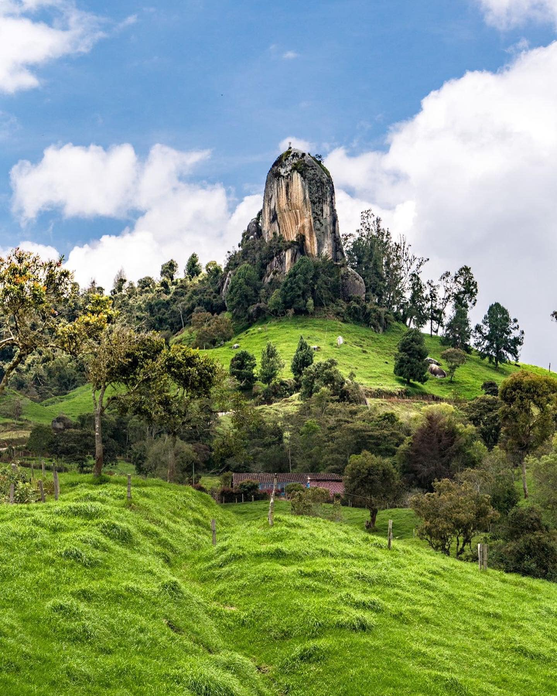

Este municipio cuenta con una serie de características que lo catalogan como uno de los municipios con mejor calidad de vida en Antioquia.
Antes de ser nombrado Entrerríos, el distrito era llamado Don Diego, en homenaje a uno de los primeros pobladores, don Diego del Castillo. También ha sido llamado Mesopotamia. Su nombre actual se debe a que el municipio está situado entre dos ríos: El río Grande y El río Chico.

Es majestuoso y muy novedoso llegar a la vereda El Peñol, ubicado a 6 kilómteros del casco urbano de Entrerríos, y encontrarse con un monolito muy parecido al de la piedra del Peñol de Guatapé. Esta piedra de 72 metros de altura, que se levanta en medio del paisaje verde, es uno de los atractivos que debes conocer de este municipio.
Compuesta principalmente de granito, forma parte del batolito antioqueño, que es un gran cuerpo rocoso situado bajo el subsuelo de este departamento colombiano, del cual hace parte también la Piedra del Peñol de Guatapé.